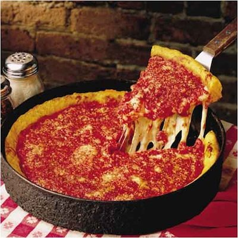

Chicago Pizza

- Deep-dish pizza is baked in a round, steel pan that is
more similar to a cake or pie pan than a typical pizza pan.
- Most used toppings on deep dish include: Pepperoni,
Sausage, Bacon, Ham and various other meats
- First Deep Dish Pizza was made by none other than
Pizzeria Uno in the early 1950's.
- The top layer of sauce remains uncooked and is the last layer added.
- Although the pizza is thick, the actual crust is thin to medium in thickness.
To Make Your Own Chi-Town Pizza Click Here